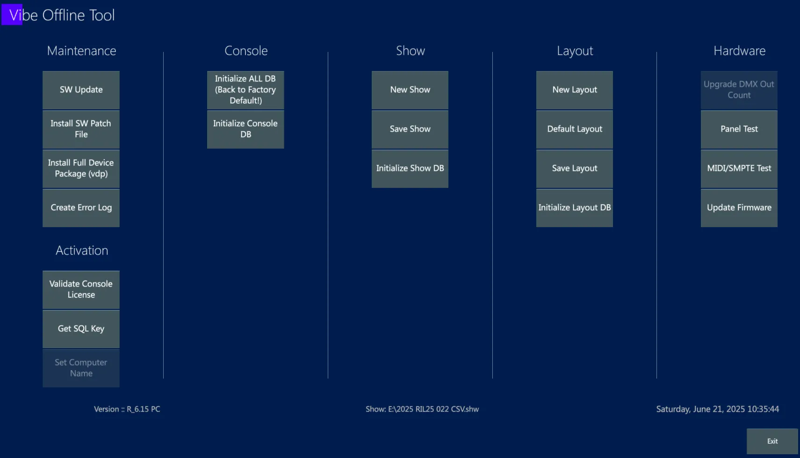
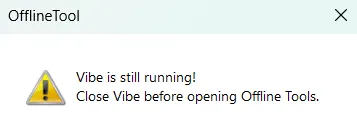
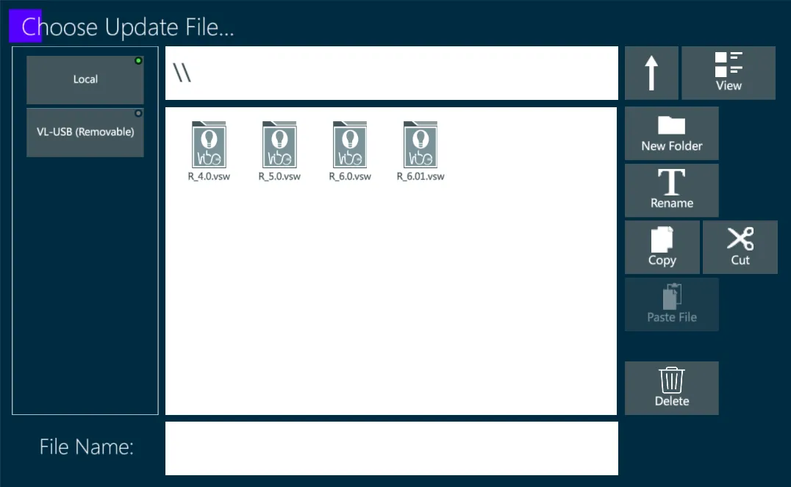
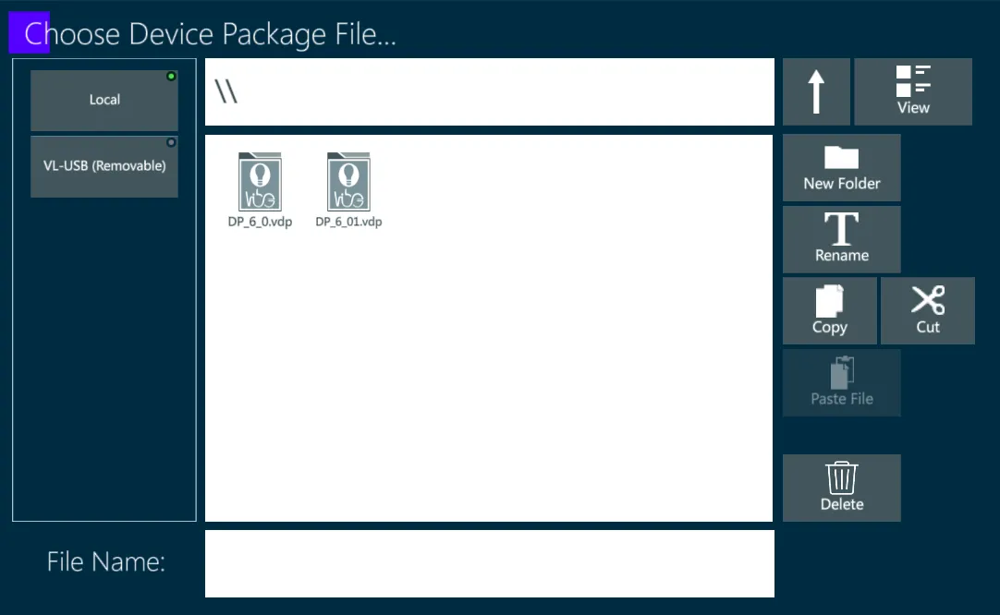
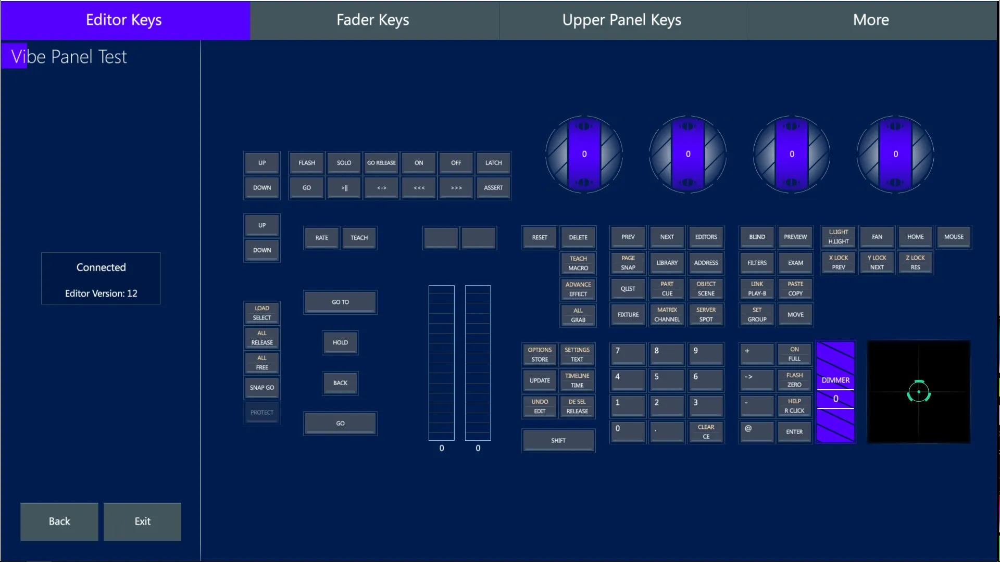
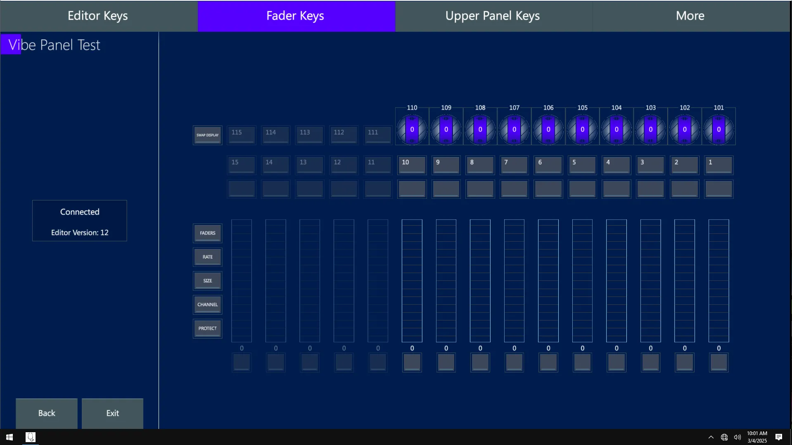
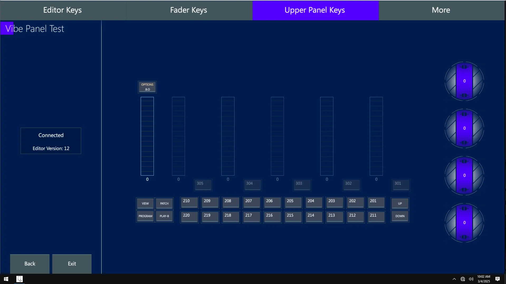
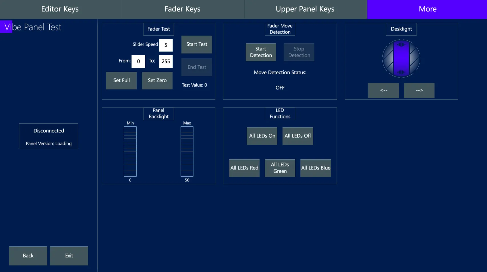
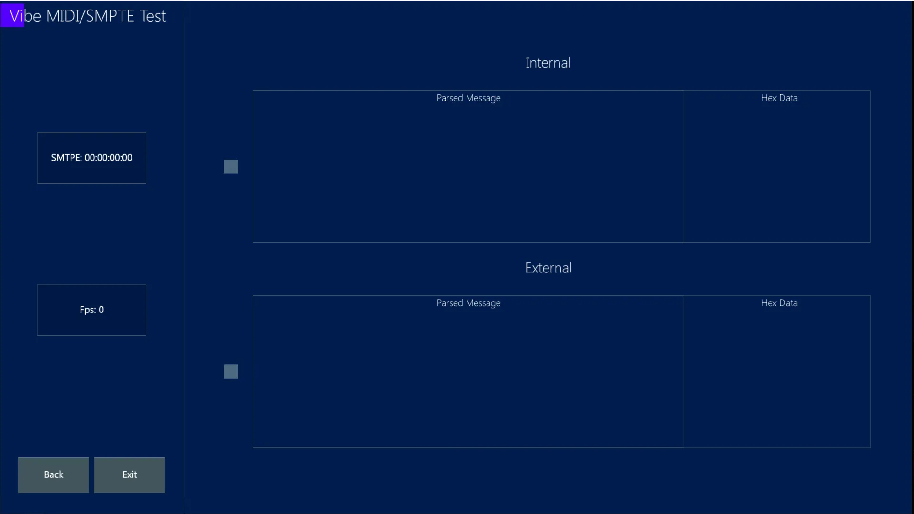

Chapter 13 Offline Tool
👉 Use the Offline Tool software for the Vibe software and hardware maintenance and updates.
This chapter describes the Offline Tool integrated software that is used for system update, restore and maintenance.
Chapter index:
13.1 HomePage
The Offline Tool is a Vibe inbuilt software used for the system maintenance.

Offline Tool can be launched either from the Vibe Menu or from the OS programs.
If Vibe software is running, it is not possible to open the Offline Tool at the same time.
The Offline Tool may be opened from the Vibe Menu automatically pausing the Vibe software, otherwise, if it’s launched from the OS, a popup advice asks to close the Vibe first.

The main uses of the Offline Tool are:
Software Updates and Patches
Device Packages Updates
Licences Validations
Restore of Databases (Console, Show, Layout)
Console Panel Test
External Ports test
Firmware Updates
To close the Offline Tool, tap on the Exit key on the bottom right of the screen. A popup will ask if only the user prefers to just Exit the software or to Open Vibe software and resume programming.
13.2 Maintenance
The Offline Tool’s Maintenance column collects the functions that keep the Vibe software up to date.
13.2.1 SW Update
The bottom left corner writes the last installer software version.
Whenever a new software release comes out, download and install it to keep the Vibe up to date.
The first installation of Vibe PC on a computer requires to use the VibePC.exe file and run some additional commands, from then on it the update process may be done in the same way of the console update process, through the Offline Tool.
On the Vibe consoles this is not necessary as they come already with the software pre-installed.

To update the Vibe software:
Download the latest installer (.vsw) from Compulite website,
Save the installer file into a USB stick,
Connect the USB stick to the Vibe console,
Open Offline Tool and tap SW Update key,
Launch the update file and wait the process to be finalized,
Enjoy the latest features!
👉 In the Release Notes document that is published for each new software release, uploaded on Compulite website, are collected and explained the version’s highlights and bug fixes.
13.2.2 SW Patch File
Some minor changes and fixes may not need a full software version to be released.
These changes may be performed by installing smaller patch files that are provided by Compulite Support.
If Compulite software support sends a patch file to fix a user-specific issue, it may be launched through the Offline Tool by tapping the Patch File key.
To install a Vibe patch file:
Download the file sent by Compulite support,
Save the patch file into a USB stick,
Connect the USB stick to the Vibe console,
Open Offline Tool and tap SW Patch File key,
Launch the patch file and wait the process to be finalized.
13.2.3 Full Device Package
The lighting fixtures market is always expanding, with many brands continuously releasing new products and fixtures.
Compulite Fixture Support provides the device building for the new fixtures coming on the market and every user request fo any missing device is then added to the Vibe Device Database.
Compulite regularly releases a Full Device Package update.
The Device Package file (.vdp) can be downloaded from Compulite website and installed on the Vibe system (consoles and PCs) to keep the device database up to date.

To update the Vibe Device database:
Download the latest device package (.vdp) from Compulite website,
Save the file into a USB stick,
Connect the USB stick to the Vibe console,
Open Offline Tool and tap Full Device Package key,
Launch the update file and wait the process to be finalized,
Enjoy the latest fixtures!
👉 The Device Database update doesn’t affect the devices that have been already used in a stored show file. When the show is loaded, if the system finds on the Console Device DB new updated devices, it asks the user if updating them in the Show Device DB or not.
👉 The User-created devices won’t be deleted or overwritten by a Device Pack update, as they have an ID that is different from the manufacturer’s devices.
13.2.4 Create Error Log
In case of troubles, after contacting Compulite Support the user may be asked to generate an Error Log.
This report helps the software debuggers and developers to analize and fix the issue.
If Compulite Support asks the user to create an Error Log, this may be done with the offline Tool by tapping on the Create Error Log key.
A popup will tell the user the system directory where the generated error file is saved.
13.3 Activation
The Offline Tool’s Activation column contains the console, software and database activation licenses installed on the system.
13.4 Database
The Offline Tool’s Console, Show and Layout columns collect the functions that allow to save the current show and layout, load new ones, or initialize the databases.
Most of these operations may be done directly on the Vibe software. The Offline Tool’s functions are kind of a backup system that allow to store the show and layout files in case of issues that don’t permit to open the Vibe software and perform these operations.
Initialize DB functions removes the current show and/or layout and brings the system back to the default starting point: New Show and New Layout. In order not to lose the currently running show and layout, it is highly recommended to save those files before initializing the database. .
👉 Initialize DB functions doesn’t affect the files stored in the system memory, but only the currently active files.
13.4.1 Console DB
Initialize ALL DB - Set the whole System back to Factory Default (or to the latest software update. This includes initialization of Console, Show, Layout and Device Databases.
Initialize Console DB - Set the Console installation information, directories and paths back to Factory Default.
13.5 Hardware
The Offline Tool’s Hardware column collects the functions that help for the Vibe hardware maintenance, such as testing the physical controllers and buttons on the panel and the signals transmission in the input and output ports.
13.5.1 Upgrade DMX Count
Vibe Licenses may be used to expand the DMX universes supported by the Vibe consoles. Not implemented yet..
13.5.2 Panel Test
The Panel test is used to test the console components and its views are according to the console type used.
The Panel Test view is divided in 4 tabs:
Editor Keys
Fader Keys
Upper Panel Keys
More
The Editor Keys, Fader Keys, Upper Panel Keys tabs work all in the same way, but they refer to the different components of the panel, showing the virtual equivalents of all the physical buttons and controllers.
Editor Keys

Fader Keys

Upper Panel Keys

- Press any physical button, including the pressable encoders, knobs and wheels, and the virtual equivalent on the Panel Test display will light up.
👉 Keep either the physical or the virtual button pressed to start a loop of the RGB backlight colors, to check if all the Leds are working properly.
Move any encoder and wheel, and the virtual equivalent on the Panel Test display will show a number according to the rotation speed and a + or - sign indicating the rotation direction.
Move the trackball, and the virtual equivalent on the Panel Test display will show its positioning.
Move any slider controller, including the Grand Master and the A/B Xfader, and the virtual equivalent on the Panel Test display will show its current level.
The More tab shows some more features to test the panel.
More

Fader Test - Bring all faders at Ful or Zero level, or set custom top and bottom limits, set the fade timing, and start an automatic fader movement test.
Fader Move Detection - Enable the fader detection and the box will show the last moved fader in real time.
Desklight - Use the virtual wheel to test the desklight’s dimming.
Panel Backlight - Use the virtual sliders to test the panel’s Min and Max backlight levels.
LED Functions - Set all the panel’s LEDs to ON or OFF. This will highlight all the panel’s backlights in white.
LED Functions - Set all the panel’s LEDs to Red, Green, Blue. This will highlight all the panel’s backlights in the selected color, to test the single RGB backlight sources.
13.5.3 MIDI/SMPTE Test
Tap on the MIDI / SMPTE Test key to access the function.

If a SMPTE input is received, the boxes on the left side of the screen will show the real timing transmitted by the timecode signal and its frame rate.
If MIDI packets are send or received, the boxes on the right side of the screen will show in real time the messages transmitted with the MIDI protocol.
13.5.4 Firmware Update
This function is used to update the firmware of the Vibe hardware components.
Tap on Firmware Update to check the Editor and Sliders Panel version and the VDMX version.
Update Editor installs the new firmware to the panel’s Editor boards, including: buttons, encoders, wheels and trackball.
Update Sliders installs the new firmware to the panel’s Controllers boards, including: Grand Master, A/B Xfader, Sliders, Qkeys, Auxkeys, Global Sliders.
Update VDMX installs the new firmware to the DMX processing board.